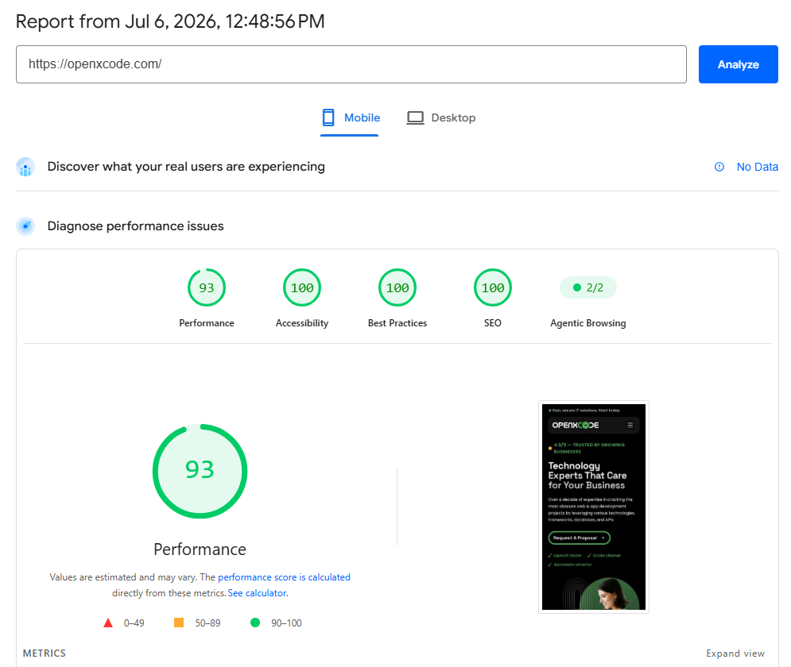
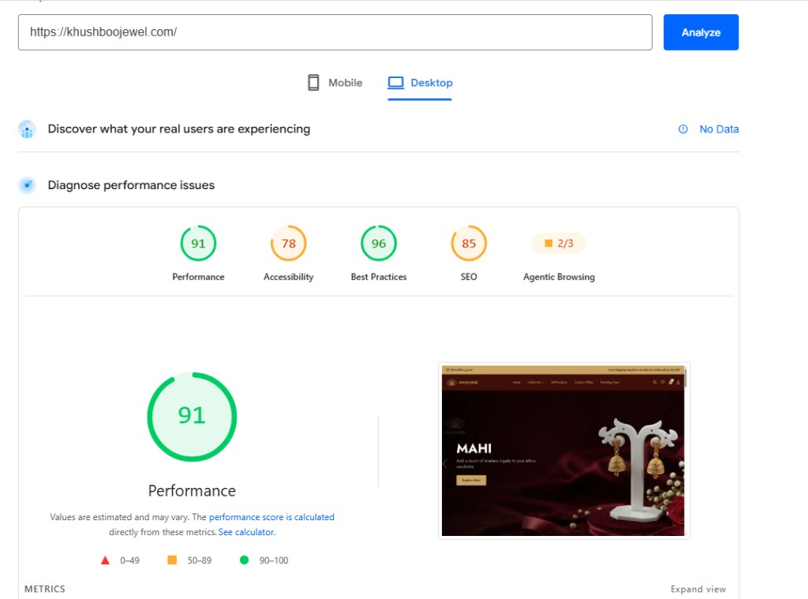

12+ Years Experience
Over a decade of hands-on WordPress development and performance tuning across diverse industries.
Improve your Google PageSpeed Insights, Core Web Vitals, WooCommerce, Elementor, and overall website performance with 12+ years of professional WordPress experience.
A senior developer dedicated to making your WordPress site faster, more reliable, and conversion-ready.
Over a decade of hands-on WordPress development and performance tuning across diverse industries.
Deep expertise in custom themes, plugins, and enterprise-level WordPress architecture.
Specialized in identifying bottlenecks and implementing proven speed optimization strategies.
Focused on LCP, INP, and CLS improvements that align with Google's ranking signals.
Optimize checkout flows, product pages, and cart performance for higher eCommerce conversions.
Reduce bloat, optimize assets, and fine-tune Elementor-built sites for peak performance.
Comprehensive performance solutions tailored to your WordPress, WooCommerce, or Elementor website.
Full-site performance overhaul including caching, minification, and code optimization.
Faster product pages, optimized checkout, and improved cart performance.
Reduce render-blocking resources and optimize Elementor widget loading.
Clean up revisions, transients, and optimize database queries for speed.
WebP conversion, lazy loading, responsive images, and compression strategies.
CDN configuration, caching rules, and security headers for global performance.
Object caching with Redis for dramatically faster database operations.
Server-level caching configuration for LiteSpeed and OpenLiteSpeed servers.
PHP, MySQL, and web server tuning for maximum hosting performance.
Targeted fixes for LCP, INP, and CLS to meet Google's performance standards.
Performance-related SEO improvements including schema and crawl optimization.
Detailed report with actionable recommendations and priority fixes.
My optimization process is designed to help achieve excellent PageSpeed Insights and Core Web Vitals scores depending on hosting, theme, plugins, third-party scripts, and server configuration.
Significantly reduced load times for a snappier browsing experience across all devices.
Smooth navigation and instant page transitions keep visitors engaged longer.
Speed is a ranking factor — faster sites tend to perform better in search results.
Every second counts — faster sites convert more visitors into paying customers.
Users leave slow sites. Speed optimization keeps them on your pages longer.
Improved LCP, INP, and CLS metrics that Google uses to evaluate page experience.
A proven, transparent workflow from initial audit to ongoing support.
Comprehensive analysis using PageSpeed Insights, GTmetrix, and WebPageTest to identify all performance bottlenecks.
Deep dive into server config, plugins, theme code, database, images, and third-party scripts affecting speed.
Implement caching, code minification, image optimization, CDN setup, and server-level improvements.
Rigorous before-and-after testing across devices and networks to verify measurable improvements.
Detailed performance report with screenshots, metrics comparison, and documentation of all changes made.
Post-delivery support to ensure optimizations remain effective and your site stays fast over time.
Expert-level proficiency across the WordPress performance ecosystem.
Custom WordPress & WooCommerce development with performance-first architecture. Scores from Google PageSpeed Insights.

Designed and developed a fully custom WordPress theme using Tailwind CSS and Advanced Custom Fields (ACF). Built with clean, semantic markup and performance-focused architecture to deliver excellent Lighthouse scores.
Mobile · Google PageSpeed Insights

Built and optimized a premium WooCommerce jewellery store with custom WordPress theme development, product catalog architecture, and performance tuning for a fast shopping experience across collections, combos, and checkout.
Desktop · Google PageSpeed Insights
Trusted by business owners, agencies, and eCommerce brands worldwide.
"Kishan transformed our WooCommerce store from painfully slow to blazing fast. Our conversion rate improved noticeably within weeks. Highly recommended!"
"As an agency, we rely on Kishan for all our client speed optimization projects. His technical expertise and clear reporting make him invaluable."
"Our Elementor site was scoring poorly on Core Web Vitals. Kishan fixed everything — LCP, CLS, the works. Professional and responsive throughout."
"Delivered exactly what was promised. Detailed audit report, step-by-step optimization, and our PageSpeed score went from red to green. Will hire again."
"Kishan set up Redis, Cloudflare, and LiteSpeed cache on our server. The difference was night and day. Best WordPress speed expert I've worked with."
"Fast communication, transparent process, and measurable results. Our bounce rate dropped significantly after Kishan's optimization work."
Everything you need to know about WordPress speed optimization services.
WordPress speed optimization is the process of improving your website's loading time through techniques like caching, image compression, code minification, database cleanup, CDN setup, and server configuration. A faster WordPress site improves user experience, SEO rankings, and conversion rates.
Most WordPress speed optimization projects are completed within 3–7 business days, depending on site complexity, number of plugins, hosting environment, and the scope of work required. A simple blog may take less time, while a large WooCommerce store may need more extensive optimization.
No. I follow a careful, tested approach with staging environment testing before applying changes to your live site. All optimizations are reversible, and I provide full documentation of every change made during the process.
My optimization process is designed to help achieve excellent PageSpeed Insights and Core Web Vitals scores depending on hosting, theme, plugins, third-party scripts, and server configuration. I do not guarantee specific scores, but most clients see significant measurable improvements.
Yes. WooCommerce optimization is one of my core specialties. I optimize product pages, cart functionality, checkout flow, database queries, and implement object caching to dramatically improve eCommerce site performance and conversion rates.
Absolutely. Elementor sites often suffer from render-blocking CSS and JavaScript. I optimize Elementor asset loading, reduce unused CSS, implement critical CSS, optimize fonts, and configure caching specifically for Elementor page builders.
I use Google PageSpeed Insights, GTmetrix, WebPageTest, Chrome DevTools Lighthouse, and Query Monitor for WordPress-specific debugging. This multi-tool approach ensures comprehensive analysis from both lab and field data perspectives.
Not always. Many performance gains come from proper caching, CDN setup, image optimization, and code improvements within your current hosting. However, if your hosting is severely limiting performance, I will provide honest recommendations for better hosting options.
A performance audit includes a full PageSpeed and Core Web Vitals analysis, server response time check, plugin audit, database review, image analysis, caching assessment, and a detailed report with prioritized recommendations and estimated impact for each fix.
Yes. I offer post-delivery support to ensure optimizations remain effective. This includes monitoring, troubleshooting any regressions caused by plugin updates or content changes, and making adjustments as needed to maintain performance.
You can hire me directly on Fiverr or Freelancer. Simply send me your website URL and describe your performance goals. I'll review your site and provide a custom quote based on your specific needs.
Core Web Vitals are Google's metrics for measuring real-world user experience: Largest Contentful Paint (LCP), Interaction to Next Paint (INP), and Cumulative Layout Shift (CLS). They are ranking factors in Google Search and directly impact how users perceive your site's speed and stability.
Let's work together to improve your website performance, Core Web Vitals, and user experience. Get in touch today for a free initial consultation.